SD1.5 対応 おすすめLoRA一覧
対応モデルごとに分類されたLoRA一覧です。各カテゴリーを選択してください。全 985 ファイル。
loras (1)
Flux (168)
Illustrious (196)
Pony (104)
SD1.5 (264)
SDXL (23)
Unknown (124)
WanVideo (106)
SD1.5 (100 items on this page / Total 264 items)
SD1.5
全般
AlleyInRA-v1
「AlleyInRA-v1」に特化した追加学習モデルです。Stable DiffusionでのAI画像生成にLoRAを導入し、特定要素の再現性を劇的に向上。効率的かつ高品質なビジュアルを求める全てのAI絵師必見のモデルです。
Size: 151,111,376 bytes
SD1.5
全般
japan
「japan」に特化した追加学習モデルです。Stable DiffusionでのAI画像生成にLoRAを導入し、特定要素の再現性を劇的に向上。効率的かつ高品質なビジュアルを求める全てのAI絵師必見のモデルです。
Size: 37,876,816 bytes
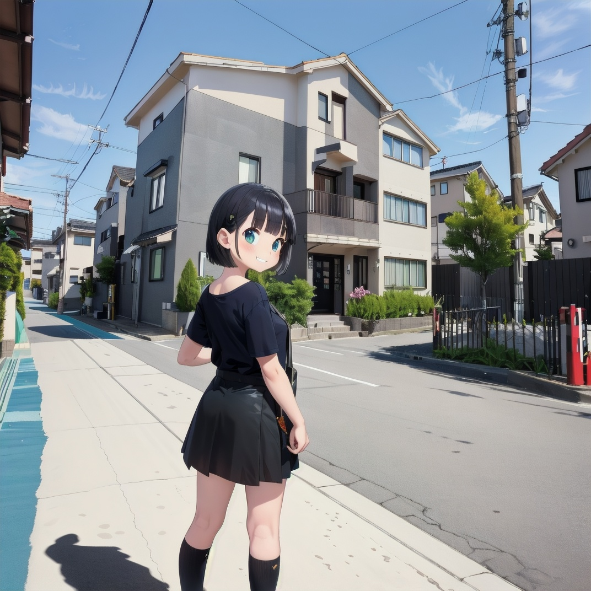
SD1.5
全般
JAPAN_SCENERY_ROAD_SD15_V1
「JAPAN_SCENERY_ROAD_SD15_V1」に特化した追加学習モデルです。Stable DiffusionでのAI画像生成にLoRAを導入し、特定要素の再現性を劇的に向上。効率的かつ高品質なビジュアルを求める全てのAI絵師必見のモデルです。
Size: 61,650,490 bytes
SD1.5
全般
jpcosermix-000008
「jpcosermix-000008」に特化した追加学習モデルです。Stable DiffusionでのAI画像生成にLoRAを導入し、特定要素の再現性を劇的に向上。効率的かつ高品質なビジュアルを求める全てのAI絵師必見のモデルです。
Size: 151,110,935 bytes
SD1.5
全般
JPfilmColor_Heavy_grain
「JPfilmColor_Heavy_grain」に特化した追加学習モデルです。Stable DiffusionでのAI画像生成にLoRAを導入し、特定要素の再現性を劇的に向上。効率的かつ高品質なビジュアルを求める全てのAI絵師必見のモデルです。
Size: 37,871,065 bytes
SD1.5
全般
JP_Countryside-v1
「JP_Countryside-v1」に特化した追加学習モデルです。Stable DiffusionでのAI画像生成にLoRAを導入し、特定要素の再現性を劇的に向上。効率的かつ高品質なビジュアルを求める全てのAI絵師必見のモデルです。
Size: 151,111,440 bytes
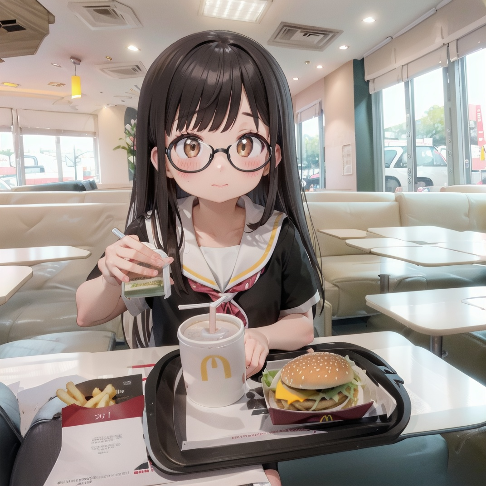
SD1.5
全般
McDonald_JP_indoors_SD15_V2
「McDonald_JP_indoors_SD15_V2」に特化した追加学習モデルです。Stable DiffusionでのAI画像生成にLoRAを導入し、特定要素の再現性を劇的に向上。効率的かつ高品質なビジュアルを求める全てのAI絵師必見のモデルです。
Size: 40,385,378 bytes
SD1.5
全般
trainconductor_lora
「trainconductor_lora」に特化した追加学習モデルです。Stable DiffusionでのAI画像生成にLoRAを導入し、特定要素の再現性を劇的に向上。効率的かつ高品質なビジュアルを求める全てのAI絵師必見のモデルです。
Size: 18,991,696 bytes
SD1.5
全般
UnderGround-CP
「UnderGround-CP」に特化した追加学習モデルです。Stable DiffusionでのAI画像生成にLoRAを導入し、特定要素の再現性を劇的に向上。効率的かつ高品質なビジュアルを求める全てのAI絵師必見のモデルです。
Size: 151,112,024 bytes
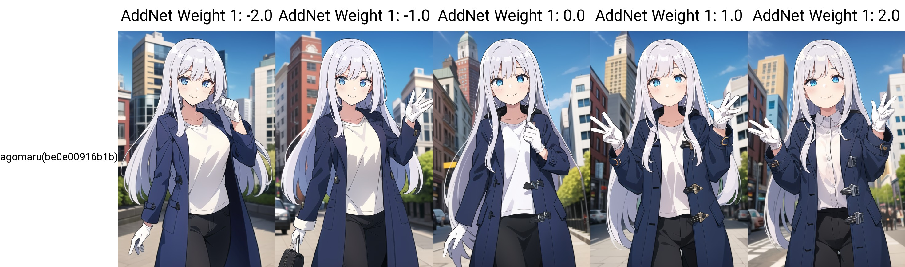
SD1.5
全般
agomaru
「agomaru」に特化した追加学習モデルです。Stable DiffusionでのAI画像生成にLoRAを導入し、特定要素の再現性を劇的に向上。効率的かつ高品質なビジュアルを求める全てのAI絵師必見のモデルです。
Size: 9,549,897 bytes
SD1.5
全般
ahegao
「ahegao」に特化した追加学習モデルです。Stable DiffusionでのAI画像生成にLoRAを導入し、特定要素の再現性を劇的に向上。効率的かつ高品質なビジュアルを求める全てのAI絵師必見のモデルです。
Size: 21,673,689 bytes
SD1.5
全般
ahri-000045
「ahri-000045」に特化した追加学習モデルです。Stable DiffusionでのAI画像生成にLoRAを導入し、特定要素の再現性を劇的に向上。効率的かつ高品質なビジュアルを求める全てのAI絵師必見のモデルです。
Size: 151,073,665 bytes
SD1.5
全般
ahri_v10
「ahri_v10」に特化した追加学習モデルです。Stable DiffusionでのAI画像生成にLoRAを導入し、特定要素の再現性を劇的に向上。効率的かつ高品質なビジュアルを求める全てのAI絵師必見のモデルです。
Size: 37,879,925 bytes
SD1.5
全般
AiriAkizukiV1
「AiriAkizukiV1」に特化した追加学習モデルです。Stable DiffusionでのAI画像生成にLoRAを導入し、特定要素の再現性を劇的に向上。効率的かつ高品質なビジュアルを求める全てのAI絵師必見のモデルです。
Size: 22,525,340 bytes
SD1.5
全般
AkaneV1.2
「AkaneV1.2」に特化した追加学習モデルです。Stable DiffusionでのAI画像生成にLoRAを導入し、特定要素の再現性を劇的に向上。効率的かつ高品質なビジュアルを求める全てのAI絵師必見のモデルです。
Size: 18,991,325 bytes

SD1.5
全般
Alice v2.0
「Alice v2.0」に特化した追加学習モデルです。Stable DiffusionでのAI画像生成にLoRAを導入し、特定要素の再現性を劇的に向上。効率的かつ高品質なビジュアルを求める全てのAI絵師必見のモデルです。
Size: 151,111,285 bytes
SD1.5
全般
alice-lora-v3-32dim-20ep
「alice-lora-v3-32dim-20ep」に特化した追加学習モデルです。Stable DiffusionでのAI画像生成にLoRAを導入し、特定要素の再現性を劇的に向上。効率的かつ高品質なビジュアルを求める全てのAI絵師必見のモデルです。
Size: 37,871,943 bytes
 flexible.preview.jpg)
SD1.5
全般
amber (genshin impact) flexible
「amber (genshin impact) flexible」に特化した追加学習モデルです。Stable DiffusionでのAI画像生成にLoRAを導入し、特定要素の再現性を劇的に向上。効率的かつ高品質なビジュアルを求める全てのAI絵師必見のモデルです。
Size: 151,073,665 bytes
SD1.5
全般
ame-10
「ame-10」に特化した追加学習モデルです。Stable DiffusionでのAI画像生成にLoRAを導入し、特定要素の再現性を劇的に向上。効率的かつ高品質なビジュアルを求める全てのAI絵師必見のモデルです。
Size: 37,964,947 bytes
SD1.5
全般
anastasia_(idolmaster)_v2
「anastasia_(idolmaster)_v2」に特化した追加学習モデルです。Stable DiffusionでのAI画像生成にLoRAを導入し、特定要素の再現性を劇的に向上。効率的かつ高品質なビジュアルを求める全てのAI絵師必見のモデルです。
Size: 37,879,838 bytes
SD1.5
全般
android18
「android18」に特化した追加学習モデルです。Stable DiffusionでのAI画像生成にLoRAを導入し、特定要素の再現性を劇的に向上。効率的かつ高品質なビジュアルを求める全てのAI絵師必見のモデルです。
Size: 151,121,421 bytes
SD1.5
全般
android_18_v110
「android_18_v110」に特化した追加学習モデルです。Stable DiffusionでのAI画像生成にLoRAを導入し、特定要素の再現性を劇的に向上。効率的かつ高品質なビジュアルを求める全てのAI絵師必見のモデルです。
Size: 151,118,700 bytes
SD1.5
全般
animemix_v3_offset
「animemix_v3_offset」に特化した追加学習モデルです。Stable DiffusionでのAI画像生成にLoRAを導入し、特定要素の再現性を劇的に向上。効率的かつ高品質なビジュアルを求める全てのAI絵師必見のモデルです。
Size: 151,108,831 bytes

SD1.5
全般
Arknights-Skadi the Corrupting Heart
「Arknights-Skadi the Corrupting Heart」に特化した追加学習モデルです。Stable DiffusionでのAI画像生成にLoRAを導入し、特定要素の再現性を劇的に向上。効率的かつ高品質なビジュアルを求める全てのAI絵師必見のモデルです。
Size: 75,612,217 bytes

SD1.5
全般
Arknights-Specter the Unchained-SOFT
「Arknights-Specter the Unchained-SOFT」に特化した追加学習モデルです。Stable DiffusionでのAI画像生成にLoRAを導入し、特定要素の再現性を劇的に向上。効率的かつ高品質なビジュアルを求める全てのAI絵師必見のモデルです。
Size: 75,576,093 bytes

SD1.5
全般
Arknights-Texas the Omertosa
「Arknights-Texas the Omertosa」に特化した追加学習モデルです。Stable DiffusionでのAI画像生成にLoRAを導入し、特定要素の再現性を劇的に向上。効率的かつ高品質なビジュアルを求める全てのAI絵師必見のモデルです。
Size: 75,611,509 bytes
SD1.5
全般
asagiMutsukiV1
「asagiMutsukiV1」に特化した追加学習モデルです。Stable DiffusionでのAI画像生成にLoRAを導入し、特定要素の再現性を劇的に向上。効率的かつ高品質なビジュアルを求める全てのAI絵師必見のモデルです。
Size: 75,612,650 bytes
SD1.5
全般
Astolfo
「Astolfo」に特化した追加学習モデルです。Stable DiffusionでのAI画像生成にLoRAを導入し、特定要素の再現性を劇的に向上。効率的かつ高品質なビジュアルを求める全てのAI絵師必見のモデルです。
Size: 37,879,638 bytes

SD1.5
全般
asuka langley soryu rebuild-lora-nochekaiser
「asuka langley soryu rebuild-lora-nochekaiser」に特化した追加学習モデルです。Stable DiffusionでのAI画像生成にLoRAを導入し、特定要素の再現性を劇的に向上。効率的かつ高品質なビジュアルを求める全てのAI絵師必見のモデルです。
Size: 37,883,248 bytes
SD1.5
全般
AsukaLangleySouryuuV2-000015
「AsukaLangleySouryuuV2-000015」に特化した追加学習モデルです。Stable DiffusionでのAI画像生成にLoRAを導入し、特定要素の再現性を劇的に向上。効率的かつ高品質なビジュアルを求める全てのAI絵師必見のモデルです。
Size: 75,628,192 bytes
SD1.5
全般
Asuna-BlueArchive
「Asuna-BlueArchive」に特化した追加学習モデルです。Stable DiffusionでのAI画像生成にLoRAを導入し、特定要素の再現性を劇的に向上。効率的かつ高品質なビジュアルを求める全てのAI絵師必見のモデルです。
Size: 19,002,793 bytes
SD1.5
全般
asuna_(sao)_v1
「asuna_(sao)_v1」に特化した追加学習モデルです。Stable DiffusionでのAI画像生成にLoRAを導入し、特定要素の再現性を劇的に向上。効率的かつ高品質なビジュアルを求める全てのAI絵師必見のモデルです。
Size: 37,861,388 bytes
SD1.5
全般
Asuna_Hard
「Asuna_Hard」に特化した追加学習モデルです。Stable DiffusionでのAI画像生成にLoRAを導入し、特定要素の再現性を劇的に向上。効率的かつ高品質なビジュアルを求める全てのAI絵師必見のモデルです。
Size: 151,073,665 bytes
SD1.5
全般
AyanamiReiV6-000010
「AyanamiReiV6-000010」に特化した追加学習モデルです。Stable DiffusionでのAI画像生成にLoRAを導入し、特定要素の再現性を劇的に向上。効率的かつ高品質なビジュアルを求める全てのAI絵師必見のモデルです。
Size: 151,111,198 bytes
SD1.5
全般
barbara1-000009
「barbara1-000009」に特化した追加学習モデルです。Stable DiffusionでのAI画像生成にLoRAを導入し、特定要素の再現性を劇的に向上。効率的かつ高品質なビジュアルを求める全てのAI絵師必見のモデルです。
Size: 75,741,903 bytes
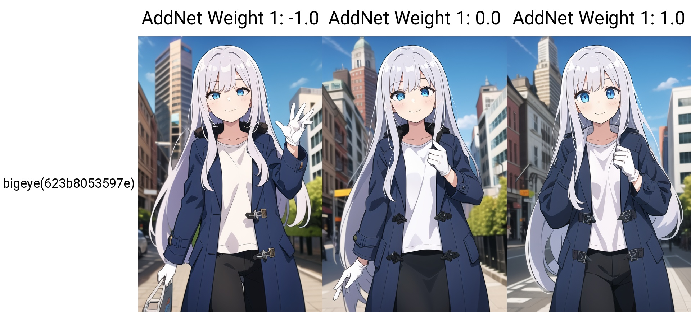
SD1.5
全般
bigeye1
「bigeye1」に特化した追加学習モデルです。Stable DiffusionでのAI画像生成にLoRAを導入し、特定要素の再現性を劇的に向上。効率的かつ高品質なビジュアルを求める全てのAI絵師必見のモデルです。
Size: 6,865,488 bytes
SD1.5
全般
boldline
「boldline」に特化した追加学習モデルです。Stable DiffusionでのAI画像生成にLoRAを導入し、特定要素の再現性を劇的に向上。効率的かつ高品質なビジュアルを求める全てのAI絵師必見のモデルです。
Size: 9,547,800 bytes
SD1.5
全般
BotanLORA-000006
「BotanLORA-000006」に特化した追加学習モデルです。Stable DiffusionでのAI画像生成にLoRAを導入し、特定要素の再現性を劇的に向上。効率的かつ高品質なビジュアルを求める全てのAI絵師必見のモデルです。
Size: 19,025,195 bytes
SD1.5
全般
bows1-000015
「bows1-000015」に特化した追加学習モデルです。Stable DiffusionでのAI画像生成にLoRAを導入し、特定要素の再現性を劇的に向上。効率的かつ高品質なビジュアルを求める全てのAI絵師必見のモデルです。
Size: 9,621,293 bytes
SD1.5
全般
breastfeeding_handjob
「breastfeeding_handjob」に特化した追加学習モデルです。Stable DiffusionでのAI画像生成にLoRAを導入し、特定要素の再現性を劇的に向上。効率的かつ高品質なビジュアルを求める全てのAI絵師必見のモデルです。
Size: 75,613,470 bytes
SD1.5
全般
BrestV1-000006
「BrestV1-000006」に特化した追加学習モデルです。Stable DiffusionでのAI画像生成にLoRAを導入し、特定要素の再現性を劇的に向上。効率的かつ高品質なビジュアルを求める全てのAI絵師必見のモデルです。
Size: 37,862,528 bytes
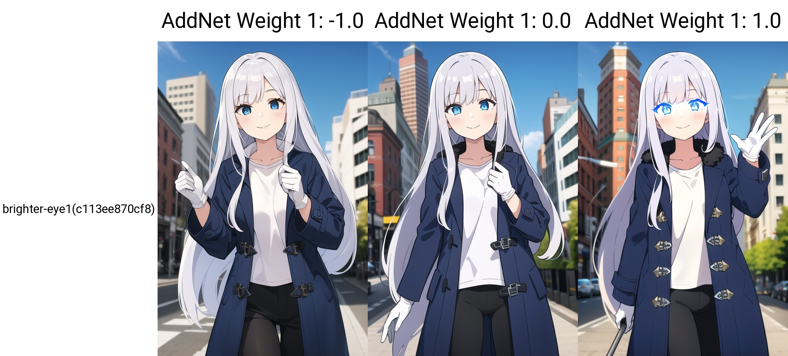
SD1.5
全般
brighter-eye1
「brighter-eye1」に特化した追加学習モデルです。Stable DiffusionでのAI画像生成にLoRAを導入し、特定要素の再現性を劇的に向上。効率的かつ高品質なビジュアルを求める全てのAI絵師必見のモデルです。
Size: 6,865,488 bytes
SD1.5
全般
bulma_v1
「bulma_v1」に特化した追加学習モデルです。Stable DiffusionでのAI画像生成にLoRAを導入し、特定要素の再現性を劇的に向上。効率的かつ高品質なビジュアルを求める全てのAI絵師必見のモデルです。
Size: 37,882,672 bytes
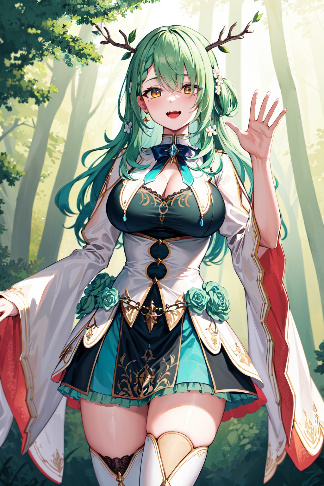
SD1.5
全般
ceres_fauna_v2
「ceres_fauna_v2」に特化した追加学習モデルです。Stable DiffusionでのAI画像生成にLoRAを導入し、特定要素の再現性を劇的に向上。効率的かつ高品質なビジュアルを求める全てのAI絵師必見のモデルです。
Size: 37,861,388 bytes
SD1.5
全般
CHAR-FernV2
「CHAR-FernV2」に特化した追加学習モデルです。Stable DiffusionでのAI画像生成にLoRAを導入し、特定要素の再現性を劇的に向上。効率的かつ高品質なビジュアルを求める全てのAI絵師必見のモデルです。
Size: 37,908,936 bytes
SD1.5
全般
CHAR-FrierenV2
「CHAR-FrierenV2」に特化した追加学習モデルです。Stable DiffusionでのAI画像生成にLoRAを導入し、特定要素の再現性を劇的に向上。効率的かつ高品質なビジュアルを求める全てのAI絵師必見のモデルです。
Size: 37,907,008 bytes
SD1.5
全般
CHAR-HoshimachiSuiseiV2
「CHAR-HoshimachiSuiseiV2」に特化した追加学習モデルです。Stable DiffusionでのAI画像生成にLoRAを導入し、特定要素の再現性を劇的に向上。効率的かつ高品質なビジュアルを求める全てのAI絵師必見のモデルです。
Size: 37,947,282 bytes

SD1.5
全般
char-Nakiri Erina-v2
「char-Nakiri Erina-v2」に特化した追加学習モデルです。Stable DiffusionでのAI画像生成にLoRAを導入し、特定要素の再現性を劇的に向上。効率的かつ高品質なビジュアルを求める全てのAI絵師必見のモデルです。
Size: 37,861,942 bytes
SD1.5
全般
CHAR-NakiriAyame_v2
「CHAR-NakiriAyame_v2」に特化した追加学習モデルです。Stable DiffusionでのAI画像生成にLoRAを導入し、特定要素の再現性を劇的に向上。効率的かつ高品質なビジュアルを求める全てのAI絵師必見のモデルです。
Size: 19,020,749 bytes
SD1.5
全般
CHAR-OuroKroniiV2
「CHAR-OuroKroniiV2」に特化した追加学習モデルです。Stable DiffusionでのAI画像生成にLoRAを導入し、特定要素の再現性を劇的に向上。効率的かつ高品質なビジュアルを求める全てのAI絵師必見のモデルです。
Size: 37,913,565 bytes
SD1.5
全般
CHAR-TaeTakemiV2
「CHAR-TaeTakemiV2」に特化した追加学習モデルです。Stable DiffusionでのAI画像生成にLoRAを導入し、特定要素の再現性を劇的に向上。効率的かつ高品質なビジュアルを求める全てのAI絵師必見のモデルです。
Size: 18,992,982 bytes
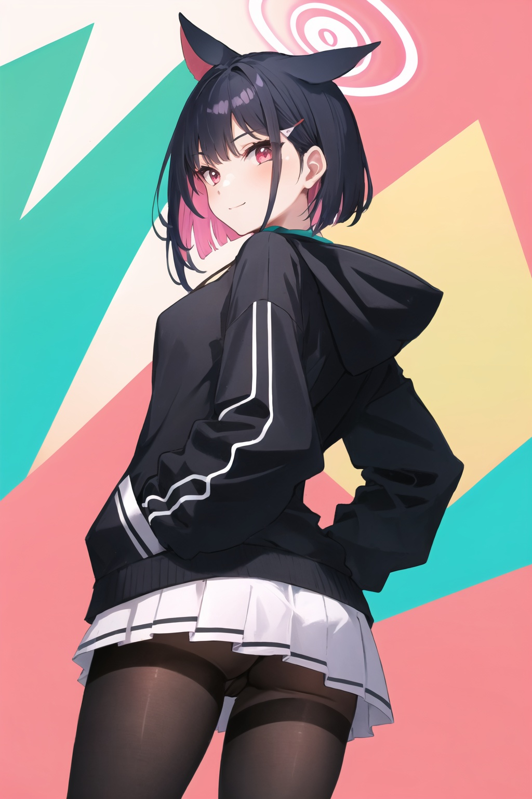
SD1.5
全般
chara-kazusa-v1c
「chara-kazusa-v1c」に特化した追加学習モデルです。Stable DiffusionでのAI画像生成にLoRAを導入し、特定要素の再現性を劇的に向上。効率的かつ高品質なビジュアルを求める全てのAI絵師必見のモデルです。
Size: 19,007,600 bytes
SD1.5
全般
chi-chi_v1
「chi-chi_v1」に特化した追加学習モデルです。Stable DiffusionでのAI画像生成にLoRAを導入し、特定要素の再現性を劇的に向上。効率的かつ高品質なビジュアルを求める全てのAI絵師必見のモデルです。
Size: 75,610,358 bytes

SD1.5
全般
chisatonishikigis1-lora-nochekaiser
「chisatonishikigis1-lora-nochekaiser」に特化した追加学習モデルです。Stable DiffusionでのAI画像生成にLoRAを導入し、特定要素の再現性を劇的に向上。効率的かつ高品質なビジュアルを求める全てのAI絵師必見のモデルです。
Size: 37,893,896 bytes
SD1.5
全般
chitanda_eru_v10
「chitanda_eru_v10」に特化した追加学習モデルです。Stable DiffusionでのAI画像生成にLoRAを導入し、特定要素の再現性を劇的に向上。効率的かつ高品質なビジュアルを求める全てのAI絵師必見のモデルです。
Size: 151,115,671 bytes
SD1.5
全般
ChunLi_v1
「ChunLi_v1」に特化した追加学習モデルです。Stable DiffusionでのAI画像生成にLoRAを導入し、特定要素の再現性を劇的に向上。効率的かつ高品質なビジュアルを求める全てのAI絵師必見のモデルです。
Size: 151,112,330 bytes

SD1.5
全般
Code Geass - C.C. @ c.c.-000010
「Code Geass - C.C. @ c.c.-000010」に特化した追加学習モデルです。Stable DiffusionでのAI画像生成にLoRAを導入し、特定要素の再現性を劇的に向上。効率的かつ高品質なビジュアルを求める全てのAI絵師必見のモデルです。
Size: 37,870,275 bytes
SD1.5
全般
Concept-dogezaV5-000007
「Concept-dogezaV5-000007」に特化した追加学習モデルです。Stable DiffusionでのAI画像生成にLoRAを導入し、特定要素の再現性を劇的に向上。効率的かつ高品質なビジュアルを求める全てのAI絵師必見のモデルです。
Size: 9,563,724 bytes

SD1.5
全般
Constricted PupilsV3
「Constricted PupilsV3」に特化した追加学習モデルです。Stable DiffusionでのAI画像生成にLoRAを導入し、特定要素の再現性を劇的に向上。効率的かつ高品質なビジュアルを求める全てのAI絵師必見のモデルです。
Size: 31,009,375 bytes
SD1.5
全般
covering_eyes
「covering_eyes」に特化した追加学習モデルです。Stable DiffusionでのAI画像生成にLoRAを導入し、特定要素の再現性を劇的に向上。効率的かつ高品質なビジュアルを求める全てのAI絵師必見のモデルです。
Size: 151,126,825 bytes
SD1.5
全般
cowprint
「cowprint」に特化した追加学習モデルです。Stable DiffusionでのAI画像生成にLoRAを導入し、特定要素の再現性を劇的に向上。効率的かつ高品質なビジュアルを求める全てのAI絵師必見のモデルです。
Size: 19,010,317 bytes
SD1.5
全般
cute_kimono_N_V1_1-000010
「cute_kimono_N_V1_1-000010」に特化した追加学習モデルです。Stable DiffusionでのAI画像生成にLoRAを導入し、特定要素の再現性を劇的に向上。効率的かつ高品質なビジュアルを求める全てのAI絵師必見のモデルです。
Size: 151,112,840 bytes
SD1.5
全般
d.va_v1
「d.va_v1」に特化した追加学習モデルです。Stable DiffusionでのAI画像生成にLoRAを導入し、特定要素の再現性を劇的に向上。効率的かつ高品質なビジュアルを求める全てのAI絵師必見のモデルです。
Size: 9,548,009 bytes
SD1.5
全般
daiwa_scarlet_v10
「daiwa_scarlet_v10」に特化した追加学習モデルです。Stable DiffusionでのAI画像生成にLoRAを導入し、特定要素の再現性を劇的に向上。効率的かつ高品質なビジュアルを求める全てのAI絵師必見のモデルです。
Size: 151,122,226 bytes
SD1.5
全般
DakiniV1
「DakiniV1」に特化した追加学習モデルです。Stable DiffusionでのAI画像生成にLoRAを導入し、特定要素の再現性を劇的に向上。効率的かつ高品質なビジュアルを求める全てのAI絵師必見のモデルです。
Size: 22,525,340 bytes
_v1.preview.jpg)
SD1.5
全般
darkness (konosuba)_v1
「darkness (konosuba)_v1」に特化した追加学習モデルです。Stable DiffusionでのAI画像生成にLoRAを導入し、特定要素の再現性を劇的に向上。効率的かつ高品質なビジュアルを求める全てのAI絵師必見のモデルです。
Size: 151,115,927 bytes
SD1.5
全般
dark_magician_girl_offset
「dark_magician_girl_offset」に特化した追加学習モデルです。Stable DiffusionでのAI画像生成にLoRAを導入し、特定要素の再現性を劇的に向上。効率的かつ高品質なビジュアルを求める全てのAI絵師必見のモデルです。
Size: 151,108,831 bytes
SD1.5
全般
ddlc-10
「ddlc-10」に特化した追加学習モデルです。Stable DiffusionでのAI画像生成にLoRAを導入し、特定要素の再現性を劇的に向上。効率的かつ高品質なビジュアルを求める全てのAI絵師必見のモデルです。
Size: 19,049,824 bytes
SD1.5
全般
deepthroat1.8
「deepthroat1.8」に特化した追加学習モデルです。Stable DiffusionでのAI画像生成にLoRAを導入し、特定要素の再現性を劇的に向上。効率的かつ高品質なビジュアルを求める全てのAI絵師必見のモデルです。
Size: 151,074,558 bytes
SD1.5
全般
dildoRiding2-000005
「dildoRiding2-000005」に特化した追加学習モデルです。Stable DiffusionでのAI画像生成にLoRAを導入し、特定要素の再現性を劇的に向上。効率的かつ高品質なビジュアルを求める全てのAI絵師必見のモデルです。
Size: 9,618,189 bytes
SD1.5
全般
DQ3PRIESTv2
「DQ3PRIESTv2」に特化した追加学習モデルです。Stable DiffusionでのAI画像生成にLoRAを導入し、特定要素の再現性を劇的に向上。効率的かつ高品質なビジュアルを求める全てのAI絵師必見のモデルです。
Size: 19,004,352 bytes
SD1.5
全般
EkunePOVFellatioV2
「EkunePOVFellatioV2」に特化した追加学習モデルです。Stable DiffusionでのAI画像生成にLoRAを導入し、特定要素の再現性を劇的に向上。効率的かつ高品質なビジュアルを求める全てのAI絵師必見のモデルです。
Size: 37,879,967 bytes
SD1.5
全般
elaina_v3
「elaina_v3」に特化した追加学習モデルです。Stable DiffusionでのAI画像生成にLoRAを導入し、特定要素の再現性を劇的に向上。効率的かつ高品質なビジュアルを求める全てのAI絵師必見のモデルです。
Size: 151,114,844 bytes
SD1.5
全般
Eromanga_all_resized
「Eromanga_all_resized」に特化した追加学習モデルです。Stable DiffusionでのAI画像生成にLoRAを導入し、特定要素の再現性を劇的に向上。効率的かつ高品質なビジュアルを求める全てのAI絵師必見のモデルです。
Size: 43,038,488 bytes
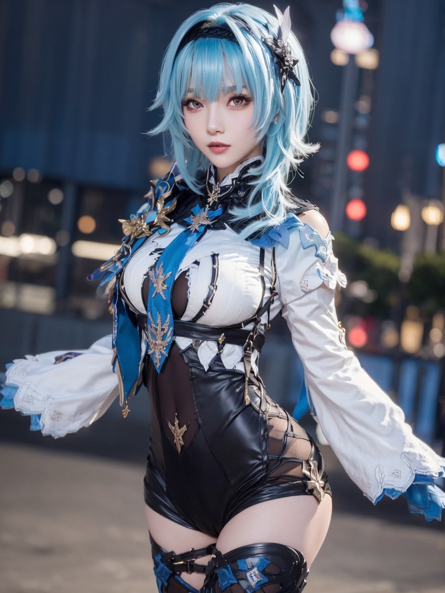
SD1.5
全般
Eula-1.0
「Eula-1.0」に特化した追加学習モデルです。Stable DiffusionでのAI画像生成にLoRAを導入し、特定要素の再現性を劇的に向上。効率的かつ高品質なビジュアルを求める全てのAI絵師必見のモデルです。
Size: 122,181,429 bytes
SD1.5
全般
eula2-000009
「eula2-000009」に特化した追加学習モデルです。Stable DiffusionでのAI画像生成にLoRAを導入し、特定要素の再現性を劇的に向上。効率的かつ高品質なビジュアルを求める全てのAI絵師必見のモデルです。
Size: 37,965,947 bytes
SD1.5
全般
FateNeroV2
「FateNeroV2」に特化した追加学習モデルです。Stable DiffusionでのAI画像生成にLoRAを導入し、特定要素の再現性を劇的に向上。効率的かつ高品質なビジュアルを求める全てのAI絵師必見のモデルです。
Size: 75,712,110 bytes
SD1.5
全般
FGOMusashi
「FGOMusashi」に特化した追加学習モデルです。Stable DiffusionでのAI画像生成にLoRAを導入し、特定要素の再現性を劇的に向上。効率的かつ高品質なビジュアルを求める全てのAI絵師必見のモデルです。
Size: 75,662,639 bytes
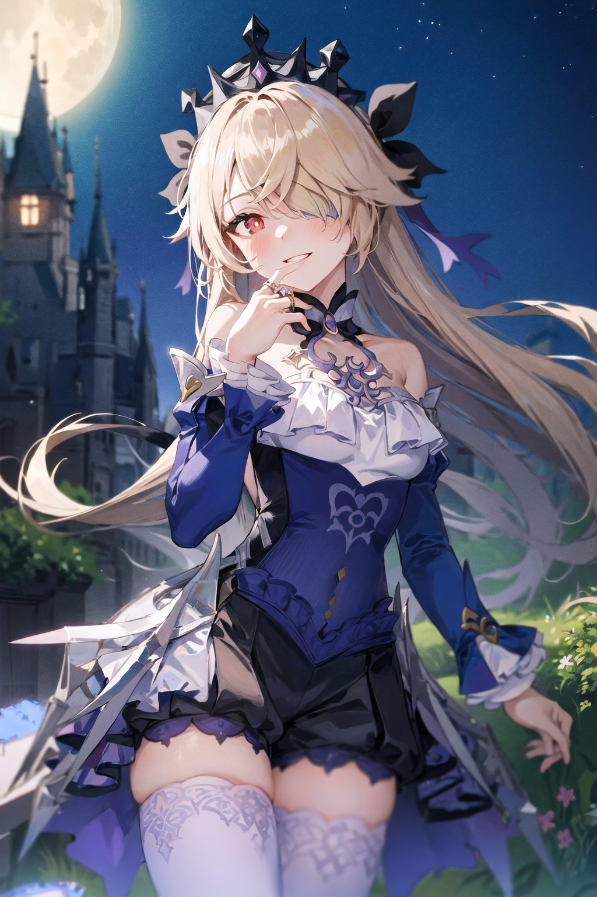
SD1.5
全般
fischl_v2_896_lion_optimizer_dim64_KohyaLora_fp32_1e-1noise_token3_13-3-2023
「fischl_v2_896_lion_optimizer_dim64_KohyaLora_fp32_1e-1noise_token3_13-3-2023」に特化した追加学習モデルです。Stable DiffusionでのAI画像生成にLoRAを導入し、特定要素の再現性を劇的に向上。効率的かつ高品質なビジュアルを求める全てのAI絵師必見のモデルです。
Size: 151,129,984 bytes
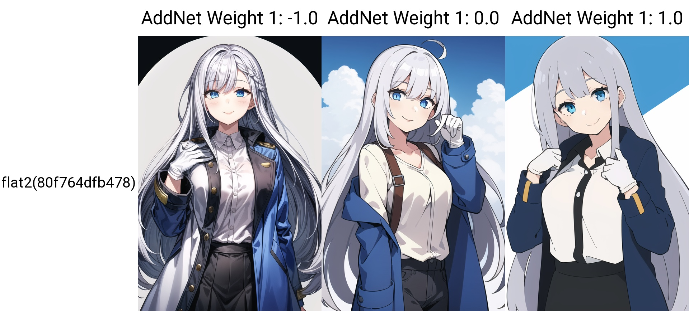
SD1.5
全般
flat2
「flat2」に特化した追加学習モデルです。Stable DiffusionでのAI画像生成にLoRAを導入し、特定要素の再現性を劇的に向上。効率的かつ高品質なビジュアルを求める全てのAI絵師必見のモデルです。
Size: 6,865,699 bytes
SD1.5
全般
florence_nightingale_v1
「florence_nightingale_v1」に特化した追加学習モデルです。Stable DiffusionでのAI画像生成にLoRAを導入し、特定要素の再現性を劇的に向上。効率的かつ高品質なビジュアルを求める全てのAI絵師必見のモデルです。
Size: 37,861,388 bytes
SD1.5
全般
freya_(danmanchi)_v2
「freya_(danmanchi)_v2」に特化した追加学習モデルです。Stable DiffusionでのAI画像生成にLoRAを導入し、特定要素の再現性を劇的に向上。効率的かつ高品質なビジュアルを求める全てのAI絵師必見のモデルです。
Size: 37,861,388 bytes
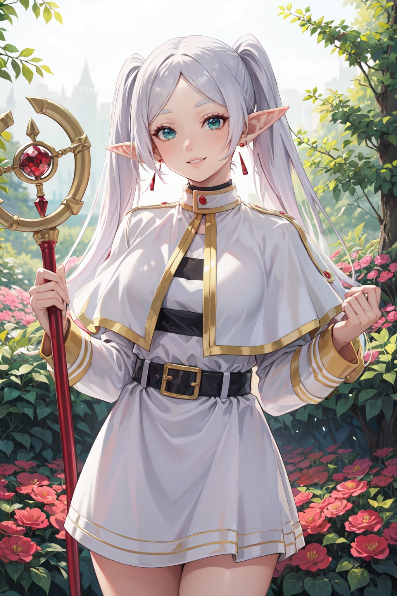
SD1.5
全般
frieren-10
「frieren-10」に特化した追加学習モデルです。Stable DiffusionでのAI画像生成にLoRAを導入し、特定要素の再現性を劇的に向上。効率的かつ高品質なビジュアルを求める全てのAI絵師必見のモデルです。
Size: 18,998,999 bytes
SD1.5
全般
fubuki-v2
「fubuki-v2」に特化した追加学習モデルです。Stable DiffusionでのAI画像生成にLoRAを導入し、特定要素の再現性を劇的に向上。効率的かつ高品質なビジュアルを求める全てのAI絵師必見のモデルです。
Size: 37,893,769 bytes
SD1.5
全般
fujiwara_chika_v2
「fujiwara_chika_v2」に特化した追加学習モデルです。Stable DiffusionでのAI画像生成にLoRAを導入し、特定要素の再現性を劇的に向上。効率的かつ高品質なビジュアルを求める全てのAI絵師必見のモデルです。
Size: 37,861,388 bytes
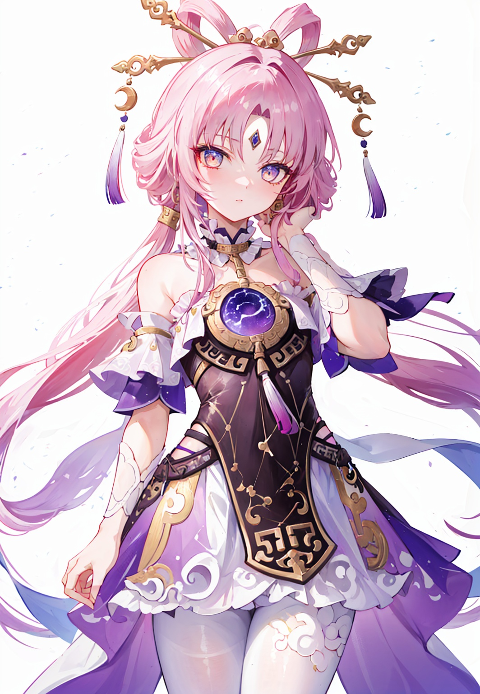
SD1.5
全般
fuxuan-str-v4
「fuxuan-str-v4」に特化した追加学習モデルです。Stable DiffusionでのAI画像生成にLoRAを導入し、特定要素の再現性を劇的に向上。効率的かつ高品質なビジュアルを求める全てのAI絵師必見のモデルです。
Size: 37,869,216 bytes
SD1.5
全般
gamer1-000005
「gamer1-000005」に特化した追加学習モデルです。Stable DiffusionでのAI画像生成にLoRAを導入し、特定要素の再現性を劇的に向上。効率的かつ高品質なビジュアルを求める全てのAI絵師必見のモデルです。
Size: 19,004,109 bytes
SD1.5
全般
ganyu2
「ganyu2」に特化した追加学習モデルです。Stable DiffusionでのAI画像生成にLoRAを導入し、特定要素の再現性を劇的に向上。効率的かつ高品質なビジュアルを求める全てのAI絵師必見のモデルです。
Size: 151,118,480 bytes
SD1.5
全般
ganyu2ep10_0.85dim32
「ganyu2ep10_0.85dim32」に特化した追加学習モデルです。Stable DiffusionでのAI画像生成にLoRAを導入し、特定要素の再現性を劇的に向上。効率的かつ高品質なビジュアルを求める全てのAI絵師必見のモデルです。
Size: 10,628,000 bytes
SD1.5
全般
GeoxorV1.1
「GeoxorV1.1」に特化した追加学習モデルです。Stable DiffusionでのAI画像生成にLoRAを導入し、特定要素の再現性を劇的に向上。効率的かつ高品質なビジュアルを求める全てのAI絵師必見のモデルです。
Size: 9,550,928 bytes
![Girls' Frontline-OTs-14[lightning]-V3](thumbnails/Girls' Frontline-OTs-14[lightning]-V3.preview.jpg)
SD1.5
全般
Girls' Frontline-OTs-14[lightning]-V3
「Girls' Frontline-OTs-14[lightning]-V3」に特化した追加学習モデルです。Stable DiffusionでのAI画像生成にLoRAを導入し、特定要素の再現性を劇的に向上。効率的かつ高品質なビジュアルを求める全てのAI絵師必見のモデルです。
Size: 75,611,638 bytes
SD1.5
全般
gloria_(pokemon)_v1
「gloria_(pokemon)_v1」に特化した追加学習モデルです。Stable DiffusionでのAI画像生成にLoRAを導入し、特定要素の再現性を劇的に向上。効率的かつ高品質なビジュアルを求める全てのAI絵師必見のモデルです。
Size: 75,620,391 bytes
SD1.5
全般
goblin_v0.1a
「goblin_v0.1a」に特化した追加学習モデルです。Stable DiffusionでのAI画像生成にLoRAを導入し、特定要素の再現性を劇的に向上。効率的かつ高品質なビジュアルを求める全てのAI絵師必見のモデルです。
Size: 9,568,095 bytes
SD1.5
全般
Gochuumon_all_resized
「Gochuumon_all_resized」に特化した追加学習モデルです。Stable DiffusionでのAI画像生成にLoRAを導入し、特定要素の再現性を劇的に向上。効率的かつ高品質なビジュアルを求める全てのAI絵師必見のモデルです。
Size: 43,436,632 bytes
SD1.5
全般
gotou_hitori
「gotou_hitori」に特化した追加学習モデルです。Stable DiffusionでのAI画像生成にLoRAを導入し、特定要素の再現性を劇的に向上。効率的かつ高品質なビジュアルを求める全てのAI絵師必見のモデルです。
Size: 75,612,534 bytes
SD1.5
全般
gotou_hitori_v1
「gotou_hitori_v1」に特化した追加学習モデルです。Stable DiffusionでのAI画像生成にLoRAを導入し、特定要素の再現性を劇的に向上。効率的かつ高品質なビジュアルを求める全てのAI絵師必見のモデルです。
Size: 75,628,281 bytes
SD1.5
全般
guilty-nikke-richy-v5
「guilty-nikke-richy-v5」に特化した追加学習モデルです。Stable DiffusionでのAI画像生成にLoRAを導入し、特定要素の再現性を劇的に向上。効率的かつ高品質なビジュアルを求める全てのAI絵師必見のモデルです。
Size: 37,866,904 bytes
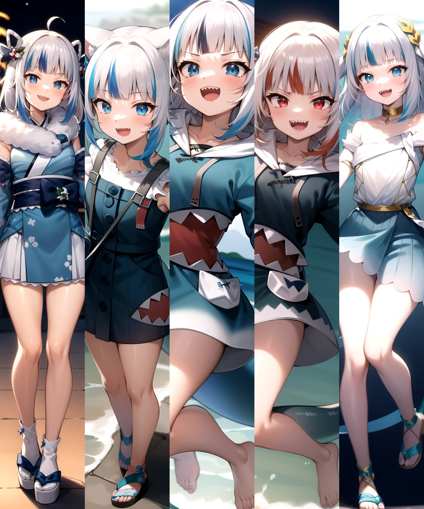
SD1.5
全般
gura-10
「gura-10」に特化した追加学習モデルです。Stable DiffusionでのAI画像生成にLoRAを導入し、特定要素の再現性を劇的に向上。効率的かつ高品質なビジュアルを求める全てのAI絵師必見のモデルです。
Size: 37,962,021 bytes
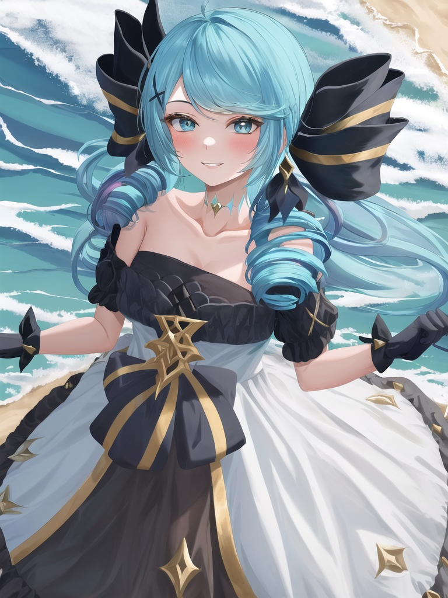
SD1.5
全般
gwen-000037
「gwen-000037」に特化した追加学習モデルです。Stable DiffusionでのAI画像生成にLoRAを導入し、特定要素の再現性を劇的に向上。効率的かつ高品質なビジュアルを求める全てのAI絵師必見のモデルです。
Size: 151,074,574 bytes
SD1.5
全般
hasumi-v2
「hasumi-v2」に特化した追加学習モデルです。Stable DiffusionでのAI画像生成にLoRAを導入し、特定要素の再現性を劇的に向上。効率的かつ高品質なビジュアルを求める全てのAI絵師必見のモデルです。
Size: 37,861,272 bytes